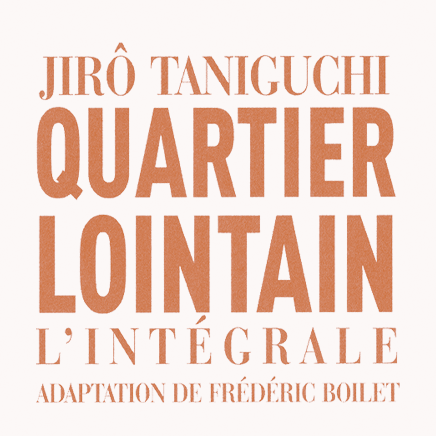

Quartier lointain
Pour ce projet, nous disposons de deux semaines pour concevoir un microsite et un teaser vidéo promotionnels pour un album sélectionné. Nous avons reçu une présentation détaillée de l'œuvre ainsi qu'un aperçu du public cible, ce qui nous permettra de développer une stratégie de communication engageante et immersive. L'objectif est de créer un teasing captivant qui attire l'attention d'un public qui n'a pas encore découvert l'album.
Lien du site web

Focus du projet: